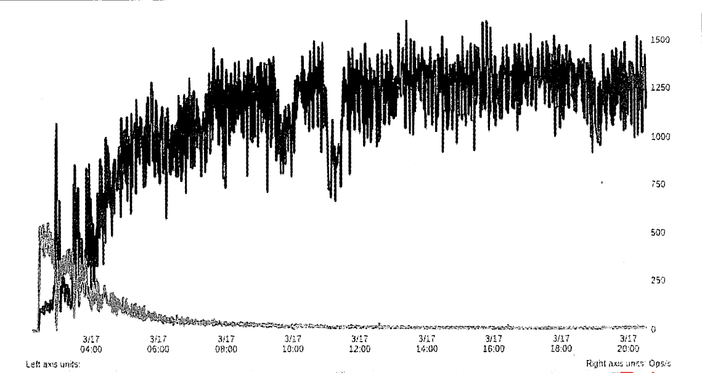

高性能MySQL 读书笔记二
一、MySQL基准测试
基准测试是针对系统设计的一种压力测试。通常的目标是为了掌握系统的行为。基准测试是一种测量和评估软件性能指标的活动用于建立某个时刻的性能基准，以便当系统发生软硬件变化时重新进行基准测试以评估变化对性能的影响。
| 名称 | 基准测试 | 压力测试 |
|---|---|---|
| 对比 | 直接、简单、易于比较，用于评估服务器的处理能力 | 对真实的业务数据进行测试，获得真实系统所能承受的压力 |
| 可能不关心业务逻辑，所使用的查询和业务的真实性可以和业务环境没关系 | 需要针对不同主题，所使用的数据和查询也是真实用到的 |
特性：
- 可重复性 可进行重复性的测试，这样做有利于比较每次的测试结果，得到性能结果的长期变化趋势，为系统调优和上线前的容量规划做参考。
- 可观测性 通过全方位的监控（包括测试开始到结束，执行机、服务器、数据库），及时了解和分析测试过程发生了什么
- 可展示性 相关人员可以直观明了的了解测试结果
- 真实性 测试结果反映了客户体验到的真实的情况
- 可执行性 相关人员可以快速的进行测试验证修改调优
1.1 为什么需要基准测试？
- 验证基于系统的一些假设，确认这些假设是否符合实际情况。
- 重现系统中的某些异常行为，解决这些异常。
- 测试系统当前的运行情况。
- 模拟比当前系统更高的负载。
- 规划未来的业务增长。
- 测试应用适应可变环境的能力
- 测试不同的硬件、软件和操作系统配置。
- 证明新采购的设备是否配置正确。
- …..
1.2 基准测试的策略
基准测试有两种主要的策略：集成式（对整个系统的基准测试）、单组件式（单独测试MySQL）。
需要测试的测试指标：吞吐量、响应时间、并发性、可扩展性。
总的来说，测试那些对用户来说最重要的指标。
1.3 基准测试方法
基准测试的一般步骤：
- 提出问题并明确目标。
- 采用标准的基准测试/设计专用的测试。
- 针对数据运行查询。
在测试过程中或完毕之后，详细地写下测试规划和测试记录。测试可能需要多次反复运行，因此需要精确地重现测试过程。
测试规划应该记录测试数据、系统配置的步骤、如何测量和分析结果、以及预热的方案等。
应该建立将参数和结果文档化的规范，每一轮测试都必须进行详细记录。可以使用电子表格或者记事本形式。
1.4 基准测试应该运行多长时间
基准测试应该运行足够长的时间。（系统如果有大量的数据和内存，等待他到达稳定状态需要非常长的时间。）

这是一个在已知系统上执行测试的例子，系统预热后，读I/O活动在三四个小时后曲线趋于稳定。（一些写I/O可能至少在八小时内变化还是很大，具体根据实际情况来考虑）
1.5 获取系统性能和状态
在执行基准测试的时候，要尽可能多地收集被测试系统的信息。
最好为基准测试建立一个目录，并且每执行一轮测试都创建单独的子目录，将测试结果、配置文件、测试指标、脚本和其他相关说明都保存在其中。
需要记录的数据包括系统状态和性能指标，如CPU使用率、磁盘I/O、网络流量统计、SHOWGLOBAL STATUS 计数器。
1.6 获得准确的测试结果
在判断结果正确与否之前，先想一下：
- 是否选择了正确的基准测试？
- 是否为问题收集了相关的数据？
- 是否采用了错误的测试标准？
然后，确认测试结果是否可重复。每次重新测试之前要确保系统的状态是一致的。需要测试的系统是经过预热的系统，还需要确保预热的时间足够长。如果预热采用的是随机查询，那么测试结果可能就是不可重复的。如果测试的过程会修改数据或者schema，那么每次测试前，需要利用快照还原数据。
影响测试结果的因素有很多，如外部的压力、性能分析和监控系统、详细的日志记录、周期性作业等。每次测试中，修改的参数应该尽可能少。如果必须要一次修改多个参数，那么可能会丢失一些信息。有些参数依赖其他参数，这些参数可能无法单独修改。有时候甚至都没有意识到这些依赖，这给测试带来了复杂性。
1.7 运行基准测试并分析结果
通常来说，自动化基准测试是个好主意。这样做可以获得更精准的测试结果。因为自动化的过程可以防止测试人员偶尔遗漏某些步骤，或者误操作。另外有助于归档整个测试过程。
二、基准测试工具
2.1 集成式测试工具
- ab 一个Apache HTTP 服务器基准测试工具。它可以测试HTTP服务器每秒最多可以处理多少请求。如果测试的是Web应用服务，这个结果可以转换成整个应用每秒可以满足多少请求。具体使用命令可以参考网址
- http_load 这个工具概念上和ab类似，但是比ab更灵活，可以通过一个输入文件提供多个URL。可以随机测试、定制http_load按照时间比率进行测试。具体使用命令可以参考网址
- JMeter 一个Java应用程序，可以加载其他应用并测试其性能。可以测试WEB引用，也可以测试FTP服务器、通过JDBC测试数据库查询。比ab和http_load更复杂，功能也更多，可以对测试进行记录、绘图，然后离线重演。具体使用可以参考网址
2.2 单组件式测试工具
- mysqlslap 可以模拟服务器的负载，并输出计时信息。它包含在MySQL5.1的发行包中。测试时可以执行并发连接数，并指定SQL语句。
- MySQL Benchmark Suite 在MySQL的发行包中也提供了一款自己的基准测试套件，可以用在不同数据库服务器上进行比较测试。它是单线程的，主要用于测试服务器执行查询的速度。结果会显示哪种类型的操作在服务器上执行得更快。
- Super Smack 一款用于MySQL和PostgreSQL的基准测试工具，可以提供压力测试和负载生成。这是一个复杂而强大的工具，可以模拟多用户访问，可以加载测试数据到数据库，并支持使用随机数据填充测试表。——》入口（现在好像没有维护了，已崩）
- sysbench 一款多线程系统压测工具。它可以根据影响数据库服务器性能的各种因素来评估系统的性能。sysbench是一款受大家喜欢的全能测试工具，支持MySQL、操作系统和硬件的硬件测试。——》入口
这里先简单介绍一下这些工具，后面会有具体使用的案例，以及提供工具的安装包。